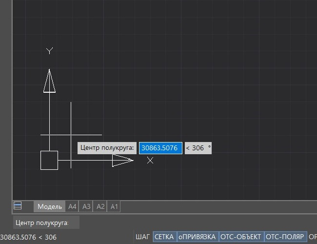
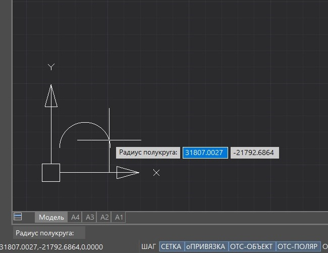
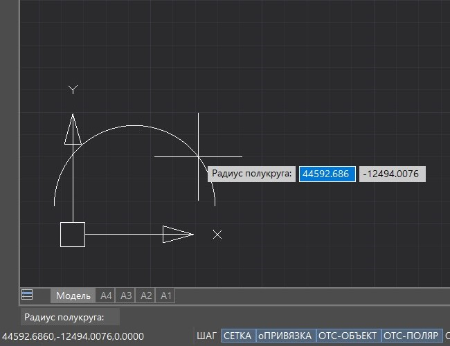
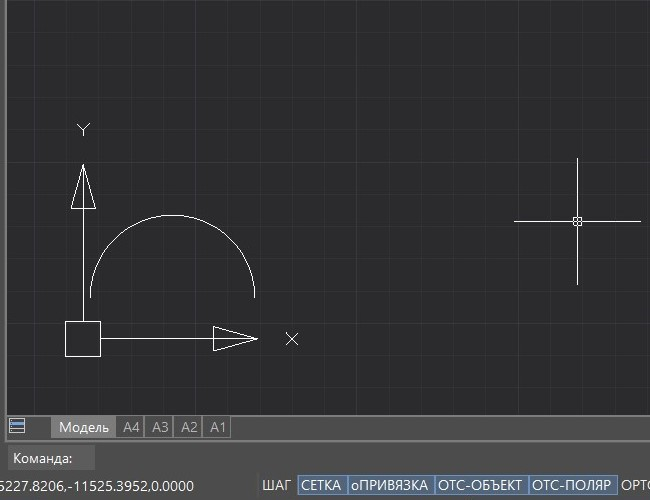

Свернуть все
Свернуть все Развернуть все
Развернуть все|
Справочное руководство .NET API
|
    
Закрыть
|
|
Класс HostMgd.EditorInput.EntityJig
Свернуть всеРазвернуть все|
Справочное руководство .NET API
|
Закрыть
|
|
Класс обеспечивает возможность создавать пользовательский примитив непосредственно на экране путем указания начальной точки и перетаскивания курсора мыши(технология Jig).
Иерархия классовОписаниеКласс обеспечивает возможность создавать пользовательский примитив непосредственно на экране путем указания начальной точки и перетаскивания курсора мыши (далее технология Jig). При этом во время перетаскивания курсора мыши на экране будет отображаться предпросмотр создаваемого примитива. При необходимости создания подобным способом произвольной графики, в том числе одновременно нескольких пользовательских примитивов в виде цельного графического объекта, используется класс DrawJig.
Пример
Шаги, которые нужно выполнить, чтобы реализовать команду построения примитива с помощью технологии Jig:
В результате работы примера на пространстве чертежа создается полукруг из пользовательского примитива Arc.
Алгоритм работы приведенного примера:




Методы
 |
ТопикиСсылки